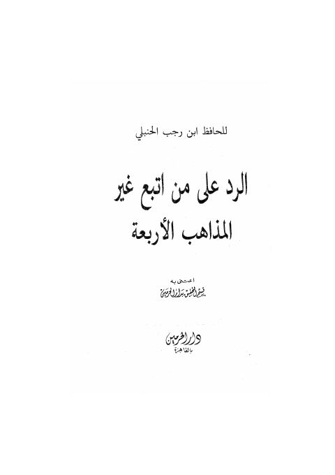

Downloads need an internet connection.
الرد على من اتبع غير المذاهب الأربعة
Authors: ابن رجب الحنبلي
Editors: قسم التحقيق بدار الحرمين
Publishers: دار الحرمين
**▫️ العنوان: الرد على من اتبع غير المذاهب الأربعة** ▪️ المؤلف: #عبد_الرحمن_بن_أحمد_بن_رجب_الحنبلي ▫️ المحقق: #قسم_التحقيق_بدار_الحرمين ▪️ الناشر: #دار_الحرمين_للطباعة ▫️ تاريخ النشر: 1419هـ 1999م ▪️ بلد النشر: القاهرة، #مصر ▫️ الطبعة: 1 ▪️ عدد الأجزاء: 1 ▫️ الصفحات: 48 ▪️ نوع الوعاء: #كتاب ▫️ التصنيف الرئيسي: #الفقه_وأصوله ۪